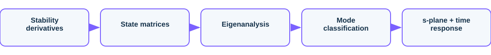

6-DOF Flight Dynamics & Mode Analysis
Eigenstructure of the aircraft natural modes
Overview
Decoupled longitudinal and lateral-directional linear state-space models of a general-aviation aircraft, with the natural modes extracted live and shown in both the s-plane and the time domain.
The challenge
An aircraft's handling is governed by a handful of natural modes. The task is to build the linear models and characterise each mode's frequency, damping and shape.
Approach

- Assemble the longitudinal [u, w, q, theta] and lateral [beta, p, r, phi] state matrices
- Compute eigenvalues, damping and natural frequencies
- Classify automatically into short-period, phugoid, Dutch roll, roll and spiral
- Excite each mode with an initial-condition response
Results
| Short-period | wn 3.60, zeta 0.69 |
| Phugoid | wn 0.21, zeta 0.08 |
| Dutch roll | wn 2.38, zeta 0.20 |
| Roll / spiral | t_half 0.08 s / 77.6 s |


What it demonstrates
Demonstrates linear flight-dynamics modelling, modal (eigenstructure) analysis, and interpretation of handling-quality modes in frequency and time.